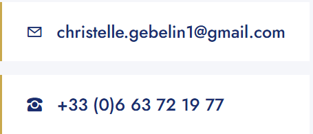

Mon accompagnement
Ma démarche
Un accompagnement structuré, transparent et personnalisé — de la première rencontre jusqu'au suivi dans la durée.
![Ma démarche]()
Un accompagnement structuré, transparent et personnalisé — de la première rencontre jusqu'au suivi dans la durée.
Ma démarche repose sur une approche rigoureuse qui place votre situation au coeur de chaque décision.
Étape 01
Tout commence par un premier échange, gratuit et sans engagement. Je prends le temps de vous écouter, de comprendre votre situation personnelle, professionnelle, familiale ainsi que vos projets de vie et vos préoccupations.
Étape 02
J'analyse l'ensemble de votre situation patrimoniale : actifs, passifs, revenus, charges, fiscalité, endettement. Ce bilan complet et personnalisé est le fondement de toute préconisation sérieuse.
Étape 03
Sur la base du bilan je vous présente une ou plusieurs stratégies patrimoniales adaptées à vos objectifs. Chaque préconisation est construite autour de solutions d'investissement concrètes et clairement expliquées.
Étape 04
Mon accompagnement ne s'arrête pas à la mise en place de vos solutions. Je reste disponible pour faire évoluer votre stratégie avec vous, face aux éventuels changements de vie et aux évolutions réglementaires.
Étape 05
Votre satisfaction est ma meilleure recommandation. En me faisant confiance, puis en me recommandant à vos proches, vous participez au développement d'un conseil patrimonial fondé sur la relation humaine.
Mes préconisations sont dictées uniquement par votre intérêt.
Vos données patrimoniales et personnelles sont protégées et ne sont jamais partagées sans votre accord.
Je vous présente toujours les avantages ET les risques de chaque solution. Pas de promesses irréalistes.
Retrouvez-moi par téléphone ou par email.
Premier échange toujours gratuit et confidentiel.
